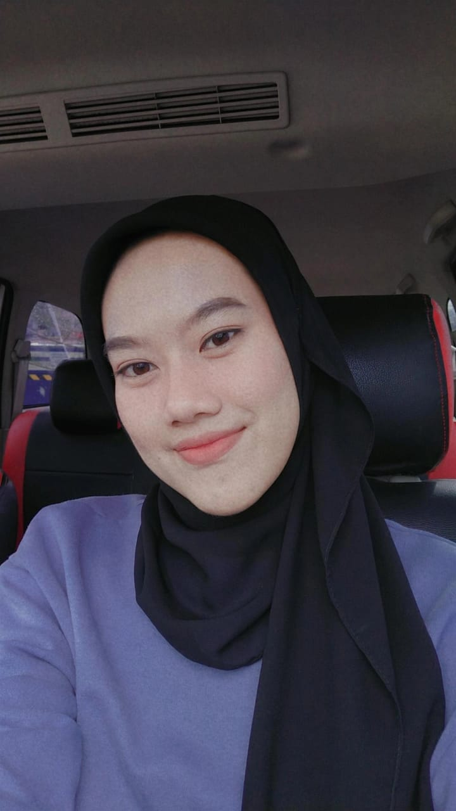

Profil
Nama : Sherin Dwi Apriliani
NIM : 201910370311186
Fakultas : Teknik
Prodi : Informatika
Perkenalkan saya Sherin Dwi Apriliani Asal Kalimantan timur. sekarang sedang menempuh pendidikan S1 Informatika di Universitas Muhammadiyah Malang
Memasak
Traveling
Belajar Hal baru
2007 - 2013 : SDN 007 Samboja
2013 - 2016 : MTS Negeri Samboja
2016 - 2019 : SMAN 1 Samboja